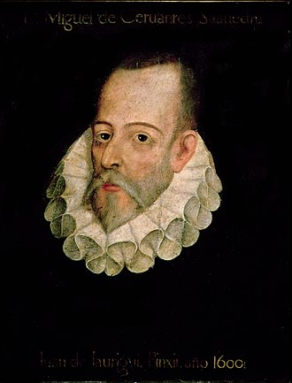
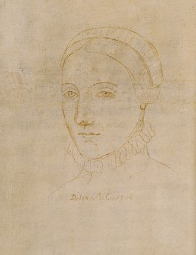
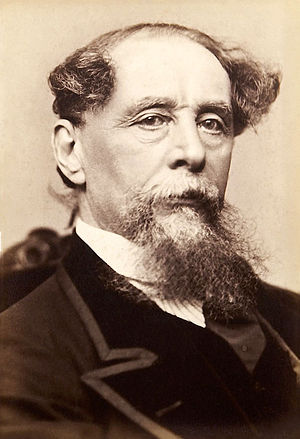
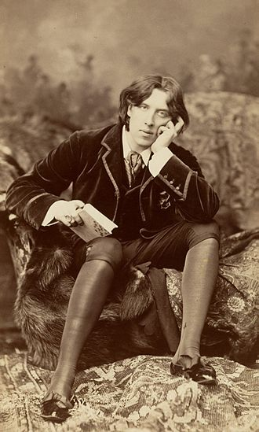
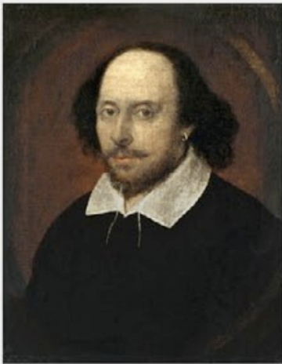
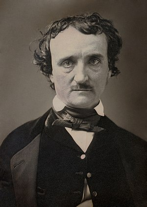
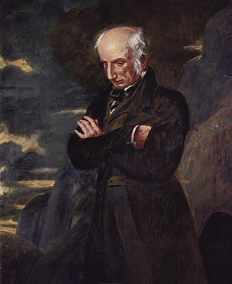

Miguel de Cervantes

| Born |
29 September 1547 |
| Died |
22 April 1616 |
| Spouse |
Catalina de Salazar (m. 1584) |
| Children |
Isabel de Saavedra
|
| Parents |
Rodrigo de Cervantes (father)
Leonor de Cortinas (mother)
|
From Wikipedia, the free encyclopedia
Miguel de Cervantes (29 September 1547 - 22 April 1616) was a Spanish
writer, novelist, poet and playwright, widely regarded as the greatest
writer in the Spanish language and one of the most important figures
in Western literature. He is best known as the author of "Don Quixote",
a novel often considered the first modern novel. His works include
novels, plays, poetry, and short stories that explore human nature,
satire, and reality versus illusion.
Cervantes was born in Alcalá de Henares, Spain, into a modest family.
As a young man, he moved to Italy and later joined the Spanish military.
He fought in the Battle of Lepanto, where he was seriously wounded and
lost the use of his left hand. In 1575, he was captured by pirates and
spent five years as a slave in Algiers before being ransomed and returning
to Spain. These experiences greatly influenced his later works.
After returning to Spain, Cervantes struggled financially and worked
various jobs, including as a tax collector and government agent.
He began writing seriously, producing plays, poetry, and his first novel
"La Galatea" in 1585, though it did not bring him much success.
Despite many difficulties, he continued writing and experimenting
with different literary forms.
Cervantes achieved lasting fame with the publication of "Don Quixote"
in 1605, followed by its second part in 1615. The novel tells the story
of a man who becomes obsessed with chivalric tales and sets out as a knight.
It was widely popular and is considered one of the greatest works of
literature ever written. He also wrote "Novelas ejemplares" (1613),
a collection of short stories, and several plays.
Throughout his life, Cervantes never became wealthy despite his success.
However, his influence grew significantly after his death. His works
have been translated into many languages and continue to be studied,
adapted, and performed worldwide. Today, Cervantes is remembered as a
pioneer of the modern novel and a key figure in literary history.
- Similar authors:

Anne Hathaway
Charles Dickens
Oscar Wilde
Miguel de Cervantes
Edgar Allan Poe
William Wordsworth